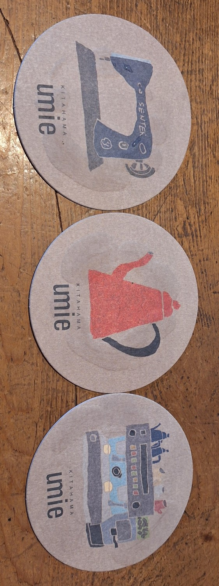
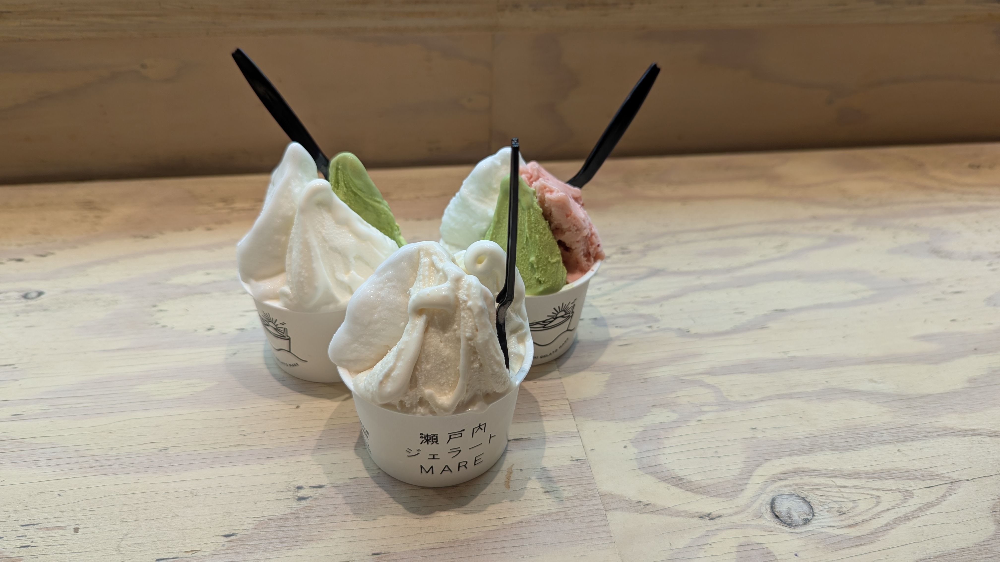

咖啡與甜點
旅途中DOCTYPE html>
咖啡與甜點
咖啡與甜點不僅是行程中的逗點，更是讓自助旅行更添深度與溫度的靈魂所在。

umie
北濱Alley裡復古工業風咖啡館，坐擁瀨戶內海海景，藝術與美食的完美融合，讓你忘卻時間流動的悠閒之地。

南珈琲店
品味昭和復古風情，咖啡與厚片吐司的極致享受！

白鷺珈琲
道後溫泉站前復古咖啡館，窗外電車美景，藝術甜點，網美必訪！

The Garden of Wordsworth
讓人彷彿置身於英式庭園，以其優雅寧靜的氛圍和精緻的餐點，為訪客提供了一段遠離塵囂的悠閒時光。

客美多(コメダ)珈琲店 松山山西店
以其寬敞舒適的空間、划算的活力早餐聞名，無論是單獨一人或與親友團體都能在此輕鬆享受愉快的咖啡時光。

Cafe Kuguri
坐落於住宅區中的人氣咖啡廳，以其時尚沉穩的裝潢、能讓人忘卻日常的悠閒氛圍，以及多樣又美味的餐點而廣受好評。

小豆島橄欖霜淇淋&檸檬果凍奶昔
小豆島橄欖公園特色甜點。

瀬戸内ジェラート MARE
活用瀨戶內及四國時令水果等在地食材為特色，提供多樣化美味義式冰淇淋而廣受好評。
留言板